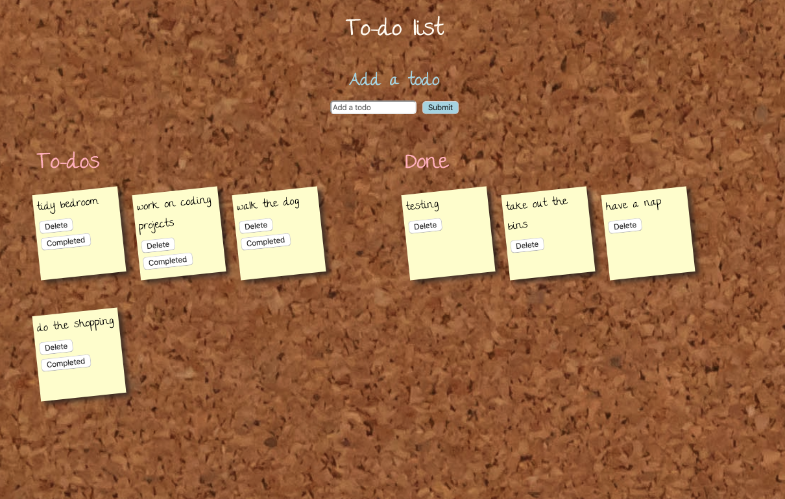

Hello! I'm Nelly, I'm 24 and from Stroud, Gloucestershire.
Having trained at Newcastle University for 4 years I qualified in 2018 as a Speech and Language Therapist. I have worked for the NHS for 5 years in various different fields (children's therapy services, public health, administration).
I decided to apply for the Mayden Academy to train as a full stack software developer as I could see from my previous experience in health care many areas that could be facilitated by technical solutions. I also have some personal projects
I would like to put into fruition but I previously didn't have the technical skills to do so! You can see my interview with Women Rock about my journey into tech here.
Alongside my work, I have a keen interest in travel and speaking modern foreign languages; cooking (and eating!); and yoga.
Skills and Technologies
Portfolio
A duplicate build of the PILOT SHOP site, practicing my CSS skills.
A collection app made with HTML and vanilla CSS on the front-end; and SQL and PHP on the
back-end. I used MySQL to manage my database.
A pairs game built using mostly vanilla JavaScript, a fraction of jQuery, and a JSON object. This
was built as a team project whilst at the Mayden Academy.
A recipe app in object orientated PHP utilising the recipe puppy API and a SQL database! The app
allows the user to select desired ingredients and generates suggested recipes, and is unit tested
using PHPUnit.
A SVG animation of the solar system!
The Academy Aptitude test application. My cohort at the Mayden Academy spent a sprint completing bug-fixes using JavaScript. We used GULP
as a task runner to compile our code, including SASS. We also used handlebars for JS templating.

A to-do app built using Slim, (PHP MVC framework), and a MySQL database;
managing project dependencies and scripts with composer. This app performs all CRUD operations.
Worked on a legacy project built with Slim (OOP PHP MVC framework) while at the Academy- The Academy Portal. The team added
additional features including the ability to delete applicants and manage the stages of the application process implementing sortable.js